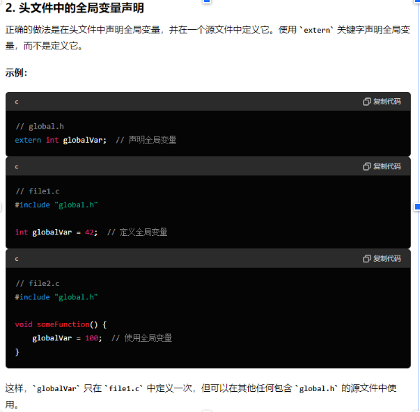
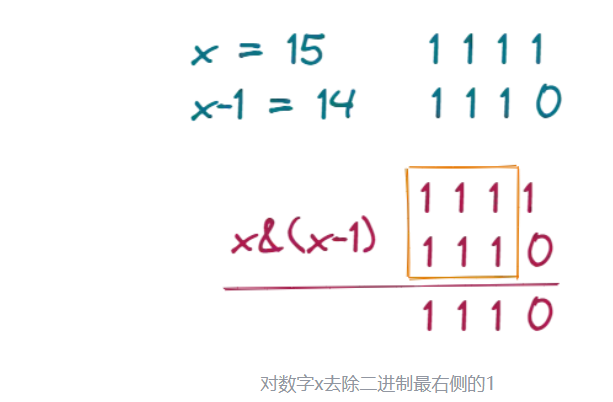

C basic
[toc]
C语言关键字
基本关键字
| 关键字 | 描述 |
|---|---|
| auto | 声明自动变量，存储在栈上，具有自动存储期。 |
| break | 终止循环或switch语句的执行，跳出循环体或switch分支。 |
| case | 在switch语句中标记不同的分支。 |
| char | 声明字符型变量或指定字符型数据类型。 |
| const | 声明常量，其值不能被修改。 |
| continue | 跳过当前循环中余下的代码，进入下一次循环的迭代。 |
| default | switch语句中的默认情况，当所有case都不匹配时执行。 |
| do | 引导do-while循环，先执行循环体再检查循环条件。 |
| double | 声明双精度浮点型变量或指定双精度浮点型数据类型。 |
控制流程关键字
| 关键字 | 描述 |
|---|---|
| else | if语句条件不满足时执行的分支。 |
| for | 引导for循环，包括初始化、条件和迭代器。 |
| goto | 无条件转移到程序中的标签语句位置，通常不建议使用。 |
| if | 条件判断，根据条件表达式的结果执行代码块。 |
| return | 从函数中返回值，并终止函数的执行。 |
| switch | 多重选择，根据表达式的值跳转到匹配的case分支。 |
| while | 引导while循环，根据条件表达式重复执行代码块。 |
数据类型关键字
| 关键字 | 描述 |
|---|---|
| enum | 定义枚举类型，并为枚举常量赋值。 |
| float | 声明单精度浮点型变量或指定单精度浮点型数据类型。 |
| int | 声明整型变量或指定整型数据类型。 |
| long | 声明长整型变量或指定长整型数据类型。 |
| short | 声明短整型变量或指定短整型数据类型。 |
| signed | 声明有符号类型的整型变量或指定有符号类型。 |
| unsigned | 声明无符号类型的整型变量或指定无符号类型。 |
| void | 指示函数没有返回值或指针没有关联特定数据类型。 |
存储类关键字
| 关键字 | 描述 |
|---|---|
| extern | 声明变量或函数在其他文件或模块中定义。 |
| register | 声明寄存器变量，提示编译器将变量存储在CPU寄存器中，以提高访问速度。 |
| static | 声明静态变量，其生命周期扩展到整个程序执行期间，但只能在当前文件中访问。 |
其他关键字
| 关键字 | 描述 |
|---|---|
| sizeof | 获取数据类型或变量在内存中所占的字节数。 |
| typedef | 定义新的数据类型别名，增强程序的可读性和可移植性。 |
| union | 定义联合体类型，允许在相同的内存位置存储不同的数据类型。 |
| volatile | 声明易变的变量，提示编译器在每次访问时重新加载其值。 |
static 作用
extern 作用
结构体联合体区别
在C语言中，结构体（struct）和联合体（union）是用来组织和存储不同数据类型的数据结构，但它们有一些重要的区别：
结构体（struct）
- 定义和用途：
- 结构体是一种用户自定义的数据类型，用于组合多个不同类型的数据成员。
- 每个成员可以有不同的数据类型，这些成员在内存中按照声明的顺序依次存储，每个成员都有自己的内存地址。
- 内存分配：
- 结构体的大小等于其所有成员大小之和，可能会受到对齐方式的影响。
- 结构体的每个成员可以同时被访问和操作。
- 使用：
- 适合表示具有多个相关属性的数据。
- 可以通过结构体访问运算符
.来访问其成员。
示例：
struct Person {
char name[50];
int age;
float salary;
};
联合体（union）
- 定义和用途：
- 联合体也是一种用户自定义的数据类型，但所有成员共享同一块内存空间。
- 联合体的所有成员起始地址相同，因此修改一个成员的值可能会影响其他成员的值。
- 内存分配：
- 联合体的大小等于其最大成员的大小。
- 联合体的所有成员共享相同的内存空间，因此在给一个成员赋值后，其他成员的值可能会被覆盖。
- 使用：
- 适合用于存储不同类型但相对较小且彼此排斥的数据。
- 通过共享内存可以实现节省内存空间的效果。
示例：
union Data {
int i;
float f;
char str[20];
};
区别总结
- 内存分配：
- 结构体的各成员会按顺序分配独立的内存空间，大小为各成员大小之和。
- 联合体的所有成员共享同一块内存空间，大小取决于最大的成员大小。
- 访问方式：
- 结构体的成员可以同时访问和操作，使用
.操作符。 - 联合体的成员共享内存，只能同时访问一个成员，使用
.操作符访问。
- 结构体的成员可以同时访问和操作，使用
- 用途：
- 结构体适合用于组合不同类型的数据，每个成员可以独立使用。
- 联合体适合用于节省内存空间或者存储不同类型的数据。
C语言读取寄存器
void write_reg32(uint32_t addr, uint32_t data) {
*((volatile uint32_t*)(addr)) = data;
}
uint32_t read_reg32(uint32_t addr) {
uint32_t rdata;
rdata = *((volatile uint32_t*)(addr))
return rdata;
}
将 addr 强制转换为 volatile uint32_t 类型的指针，然后用 * 解引用该指针。换言之，它尝试从 addr 指向的内存位置读取一个32位的无符号整数，并且这个操作中的值的读取不会被编译器优化器所改变。
C语言压栈过程
在C语言中，函数调用时的压栈过程是指将函数调用时需要保存的信息压入栈中，以便在函数返回时能够正确恢复执行现场的过程。这个过程包括以下几个关键步骤：
- 保存返回地址： 当一个函数被调用时，程序需要知道从哪里调用了该函数，以便在函数执行完毕后能够返回正确的位置继续执行。因此，第一步是将调用函数后的指令地址（即返回地址）压入栈中。在大多数系统中，返回地址存储在程序计数器（PC）或者相关寄存器中，需要将其压入栈保存。
- 保存旧的栈帧指针： 栈帧是用来存储函数调用所需的局部变量、函数参数及其它相关信息的一部分栈空间。为了实现函数嵌套调用，当前被调用函数执行时，需要保存上一个函数的栈帧指针，即将当前栈顶的地址（旧的栈帧指针）压入栈中。
- 保存函数参数： 如果函数有参数，这些参数也会被压入栈中。参数的压栈顺序通常是从右至左的，这样在函数内部可以通过偏移量来访问这些参数。
- 调整栈指针： 将栈指针移动到新的函数调用的栈帧的起始位置，即分配局部变量和临时数据的空间。
这些步骤保证了在函数调用过程中，所有需要保留的信息都被正确地保存在栈中。当函数执行完成后，会按照相反的顺序进行出栈操作，即从栈中弹出保存的信息，包括返回地址、旧的栈帧指针和参数，以恢复到调用该函数之前的执行状态。
这种栈的使用方式，使得程序能够有效地管理函数调用和返回过程中的数据和执行位置，是实现函数调用的基本机制之一。
C语言内存布局
C语言程序的内存布局主要包括以下几个部分，每个部分在程序运行时都有其特定的作用和存储方式：
- 代码区（Text Segment）：
- 代码区存储程序的机器代码，即编译后的指令。这些指令在程序执行时被逐条加载到CPU进行执行。
- 通常情况下，代码区是只读的，因为程序在运行过程中不应该修改自身的代码。
- 全局数据区（Initialized Data Segment）：
- 全局数据区存储已经初始化的全局变量和静态变量。
- 在程序开始运行时，全局数据区的变量会被初始化为预定义的值（例如，全局变量初始化为0或者指定的初值）。
- 未初始化数据区（Uninitialized Data Segment，或称为BSS Segment）：
- 未初始化数据区存储未初始化的全局变量和静态变量，其初值通常为0。
- 这部分数据在程序开始运行前被系统自动初始化为0或者空指针（对于指针类型）。
- 栈（Stack）：
- 栈用于存储函数的局部变量、函数参数、返回地址以及用于函数调用和返回的相关信息。
- 每次函数调用时，系统会自动为其分配一段栈空间，函数执行完毕后这段空间会被释放。
- 栈的操作是后进先出（LIFO）的，确保了函数调用的顺序和内存的高效使用。
- 堆（Heap）：
- 堆用于存储动态分配的内存，通常是通过malloc、calloc等函数分配的内存。
- 堆的内存需要手动释放，否则可能导致内存泄漏。
- 堆的内存分配和释放不是按照固定的顺序，可以根据程序运行时的需要进行动态调整。
- 命令行参数和环境变量：
- 命令行参数存储程序运行时传入的参数。
- 环境变量包含了一些系统运行时的环境信息，比如PATH、HOME等。
在C语言中，程序员通常主要关注代码区、全局数据区、未初始化数据区、栈和堆这几个主要的内存区域。了解这些内存区域的特点和使用方式，有助于有效地管理程序的内存资源，避免内存泄漏和访问错误，提高程序的健壮性和性能。
C语言定义全局变量冲突
如果你在头文件中定义一个全局变量，并在多个源文件中包含该头文件，那么每个源文件都会创建该变量的一个副本。这将导致编译错误，因为 C 语言不允许多个定义同名的全局变量。

C语言区分大小端
#include <stdio.h>
int check_endianness() {
union {
unsigned int i;
unsigned char c[4];
} test_union;
test_union.i = 0x01020304;
if (test_union.c[0] == 1) {
return 1; // 大端
} else {
return 0; // 小端
}
}
int main() {
if (check_endianness()) {
printf("大端 (Big-endian)\n");
} else {
printf("小端 (Little-endian)\n");
}
return 0;
}
test_union.i 被赋值为 0x01020304。这是一个32位的整数，包含4个字节。
如果系统是大端序（Big-endian），那么内存中存储的顺序为：01 02 03 04。
如果系统是小端序（Little-endian），那么内存中存储的顺序为：04 03 02 01。
统计64无符号整形中0、1的个数
Brian Kernighan算法可以用于清除二进制数中最右侧的1。
Brian Kernighan算法的做法是先将当前数减一，然后在与当前数进行按位与运算。
x=x&(x-1)

#include <stdio.h>
#include <stdint.h>
void count_bits(uint64_t number, int *count_zeros, int *count_ones) {
*count_ones = 0;
while (number) {
number &= (number - 1);
(*count_ones)++;
}
*count_zeros = 64 - *count_ones;
}
int main() {
uint64_t number = 0b11010101; // 示例数
int count_zeros, count_ones;
count_bits(number, &count_zeros, &count_ones);
printf("Number of 0s: %d, Number of 1s: %d\n", count_zeros, count_ones);
return 0;
}
MSB LSB
统计64位无符号整数中最高有效位（Highest Significant Bit, MSB）和最低有效位（Least Significant Bit, LSB）的位位置
#include <stdio.h>
#include <stdint.h>
// 找到最低有效位（LSB）的位置
int find_lsb(uint64_t number) {
if (number == 0) return -1; // 如果数是0，没有有效位
int position = 0;
while ((number & 1) == 0) {
number >>= 1;
position++;
}
return position;
}
// 找到最高有效位（MSB）的位置
int find_msb(uint64_t number) {
if (number == 0) return -1; // 如果数是0，没有有效位
int position = 63;
while ((number & (1ULL << position)) == 0) {
position--;
}
return position;
}
int main() {
uint64_t number = 0b11010101; // 示例数
int lsb_position = find_lsb(number);
int msb_position = find_msb(number);
if (lsb_position != -1) {
printf("LSB position: %d\n", lsb_position);
} else {
printf("The number has no LSB (number is 0).\n");
}
if (msb_position != -1) {
printf("MSB position: %d\n", msb_position);
} else {
printf("The number has no MSB (number is 0).\n");
}
return 0;
}
memory copy
561 void *memcpy(void *dest, const void *src, size_t count)
562 {
563 char *tmp = dest;
564 const char *s = src;
565
566 while (count--)
567 *tmp++ = *s++;
568 return dest;
569 }